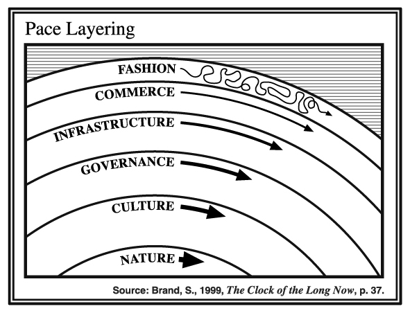
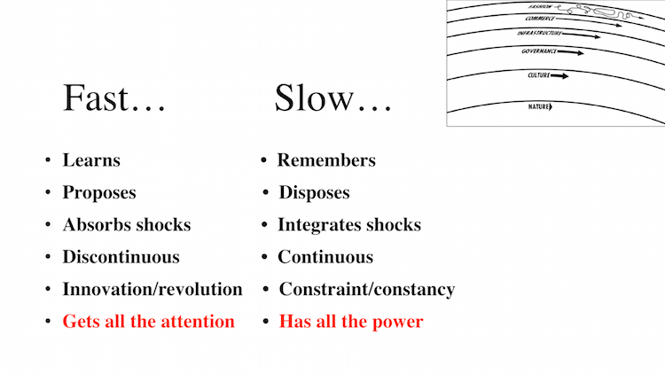

tilpace layers
Stewart Brand1, in his book The Clock of Long Now, described the concept of pace layers: that within a society different groups move at different speeds. The relationship between layers creates both internal tension and desirable systemic effects, allowing for society to innovate and disrupt while simultaneously providing consistency and stability.

This is a mental model and framework for understanding society at large, but applies equally well for many large dynamic systems of people, software, architecture, and nature. Faster layers tend to be at the visible surface and change discontinuously, innovating when faced with new input. Slower layers are more powerful, integrating and codifying lessons from faster layers while providing inertial continuity that constrains them.

When struggling to weigh fast with slow, balancing allowing change with providing continuity, consider how Pace Layers can help you think about the system you’re working within.
To change is to lose identity; yet to change is to be alive2
-
Stewart Brand is an overall fascinating and polarizing person. 1960s San Francisco counter-culture leader, editor of the Whole Earth Catalog, president of the Long Now Foundation, and friend of Douglas Engelbart, Steve Jobs, Buckminster Fuller, and Brian Eno.
↩ -
This and many other great moments from Brand’s lecture at The Long Now’s Interval.
↩